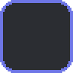

“Ne öğrendim?” paneli
Oyununuza öğrenciye ne yaptığını ve ne öğrendiğini söyleyen bir arayüz ekleyecek, oyun döngüsünü (başla, oyna, bitir, yeniden dene) kapatacaksınız.
- Çözünürlükten bağımsız bir arayüz kurar.
- Skor ve süre sistemlerini oyun döngüsüne bağlar.
- Geri bildirimin öğrenmedeki rolünü tartışır.
Başlangıç dosyaları



Arayüzü kurun
- Canvas ve ölçekleme
GameObject → UI → Text - TextMeshPro (Unity 6'nın bazı sürümlerinde menü adı UI (Canvas)). Canvas ve EventSystem kendiliğinden eklenir. Canvas'ı seçin: Canvas Scaler → UI Scale Mode: Scale With Screen Size, Reference Resolution 1920 × 1080, Match 0,5.
- Skor göstergesi
Oluşan yazının adı
SkorMetni. Rect Transform'daki çapa kutusuna tıklayıp Alt/Option basılıyken sol üst'ü seçin. Yazı boyutu 40, metin “Doğru: 0 Yanlış: 0”. - Süre göstergesi
Bir yazı daha:
SureMetni, çapa sağ üst, sağa hizalı, metin “00:00”.Kontrol: Game penceresinin boyutunu değiştirince iki yazı köşelerinde kalıyor. - Bitiş paneli
panel.png'yi içe aktarın; Sprite Editor'de dört kenar Border'ını 12 yapın. GameObject → UI → Image, adıBitisPaneli, Source Image panel, Image Type: Sliced, çapa ortada, boyut 900 × 500. İçine başlık veOzetMetniyazıları ekleyin. - Yeniden dene düğmesi
buton.png'yi aynı biçimde (Border 8) hazırlayın. BitisPaneli'ne sağ tık → UI → Button - TextMeshPro; Source Image buton, Sliced, yazısı “Yeniden dene”. - Yöneticiler
Boş bir nesne:
Yonetim.SkorYonetici.csveOyunDongusu.cs'yi ekleyin; alanlara ilgili yazıları ve BitisPaneli'ni sürükleyin. Düğmenin On Click () listesinde + → Yonetim'i sürükleyin → OyunDongusu → YenidenDene. - Seçenekleri bağlayın
9. haftadaki Secenek dosyalarını silip bu haftanın dosyalarını koyun. Seçenek nesnelerinin Inspector'daki ayarları korunur.
Kontrol: Seçeneklere dokununca sol üstteki sayılar artıyor, süre akıyor. - Bitiş alanı
Hedef noktaya bir nesne koyun, collider'ında Is Trigger işaretli. 2B'de
BitisAlani2D, 3B'deBitisAlani3Dekleyin; Oyun Dongusu alanına Yonetim'i sürükleyin.Kontrol: Hedefe ulaşınca oyun donuyor, panelde oturum özeti ve süre görünüyor; Yeniden dene sahneyi baştan başlatıyor.
using UnityEngine; using TMPro; // Oturum boyunca doğru/yanlış sayısını ve geçen süreyi tutar, göstergeleri günceller. // Sahnede bir tane bulunur; öteki script'ler SkorYonetici.Ornek ile erişir. public class SkorYonetici : MonoBehaviour { public static SkorYonetici Ornek { get; private set; } [SerializeField] private TMP_Text skorMetni; // sol üst [SerializeField] private TMP_Text sureMetni; // sağ üst private int dogru; private int yanlis; private float sure; private bool sayiyor = true; void Awake() { if (Ornek != null && Ornek != this) { Destroy(gameObject); return; } Ornek = this; } void Start() { Yenile(); } void Update() { if (!sayiyor) return; sure += Time.deltaTime; sureMetni.text = SureYazisi(); } public void Kaydet(bool dogruMu) { if (dogruMu) dogru++; else yanlis++; Yenile(); } public void Durdur() { sayiyor = false; } public string OturumOzeti() { int toplam = dogru + yanlis; if (toplam == 0) return "Henüz deneme yapılmadı."; int oran = Mathf.RoundToInt(100f * dogru / toplam); return $"{toplam} denemede {dogru} doğru (%{oran})\nSüre: {SureYazisi()}"; } private void Yenile() { skorMetni.text = $"Doğru: {dogru} Yanlış: {yanlis}"; } private string SureYazisi() { return $"{(int)(sure / 60):00}:{(int)(sure % 60):00}"; } }
using UnityEngine; using UnityEngine.SceneManagement; using TMPro; // Oyunun bitişini ve yeniden başlatılmasını yönetir. public class OyunDongusu : MonoBehaviour { [SerializeField] private GameObject bitisPaneli; [SerializeField] private TMP_Text ozetMetni; void Start() { bitisPaneli.SetActive(false); } public void OyunuBitir() { if (SkorYonetici.Ornek != null) { SkorYonetici.Ornek.Durdur(); ozetMetni.text = SkorYonetici.Ornek.OturumOzeti(); } bitisPaneli.SetActive(true); Time.timeScale = 0f; // oyunu dondur } // "Yeniden dene" düğmesinin On Click () listesine bağlanır public void YenidenDene() { Time.timeScale = 1f; // sahne yüklemeden önce geri al SceneManager.LoadScene(SceneManager.GetActiveScene().name); } }
Çözünürlük testi
Game penceresinin üstündeki çözünürlük menüsünden sırayla 1920 × 1080, 1280 × 720 ve 4:3'ü seçin (yoksa + ile ekleyin). Her birinde bir ekran görüntüsü alın. Telefon için Simulator sekmesine geçip bir telefon modeli de deneyebilirsiniz.
Teslim ve tamamlanma ölçütleri
- Skor ve süre göstergeleri doğru köşelere çapalanmış; üç çözünürlükte de yerinde.
- Seçenekler skoru güncelliyor.
- Hedefe ulaşınca bitiş paneli açılıyor, özet ve süre gösteriliyor, oyun duruyor.
- Yeniden dene düğmesi sahneyi baştan başlatıyor ve oyun yeniden akıyor (Time.timeScale geri alınmış).
Sık karşılaşılan sorunlar
| Sorun | Çözüm |
|---|---|
| Yeniden deneyince hiçbir şey hareket etmiyor | Time.timeScale 1'e döndürülmüyor. OyunDongusu.YenidenDene'nin düğmeye bağlı olduğundan emin olun. |
| Düğmeye tıklanmıyor | Sahnede bir EventSystem olmalı; Canvas ile birlikte gelir, silinmişse GameObject → UI → Event System. |
The type or namespace name 'TMPro' could not be found | TextMeshPro içe aktarılmamış. Window → TextMeshPro → Import TMP Essential Resources. |
| Sayılar artmıyor | Sahnede SkorYonetici olan bir nesne var mı? Seçeneklerde 12. haftanın Secenek dosyaları mı kullanılıyor? |
| Panel köşeleri bulanık ya da gerilmiş | Image Type Sliced mı? Sprite Editor'de Border ayarlandı mı? |
Final projesine taşı
Final projenizin bitiş panelinde yalnızca puanı değil, öğrenme çıktısına ilişkin bir özeti gösterin: hangi kavramda kaç doğru, en çok hangi hatayı yaptı. SkorYonetici'yi kendi konunuzun kategorilerini sayacak biçimde genişletin.